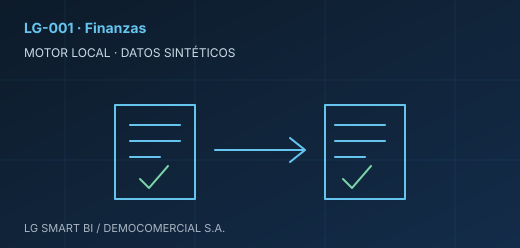
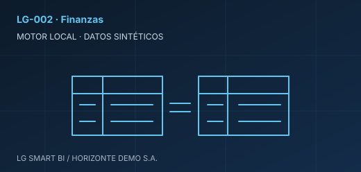
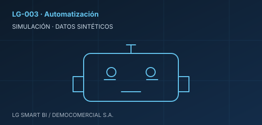
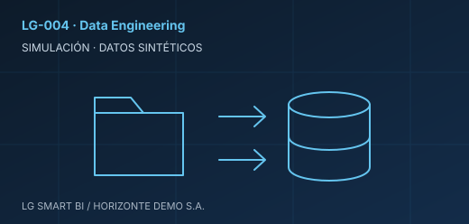
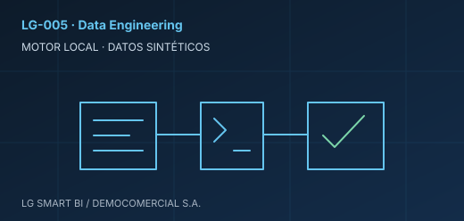
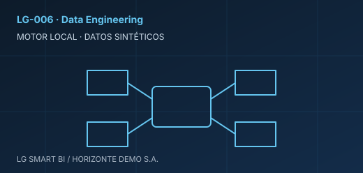
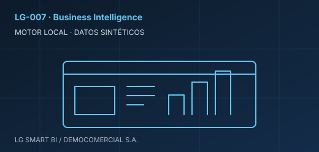
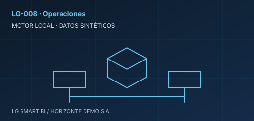
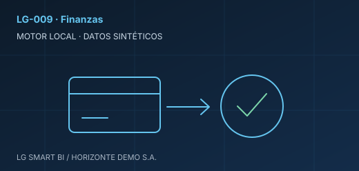

Power BI y Business Intelligence
Desarrollo de informes comerciales, financieros, operativos y gerenciales, con modelos de datos optimizados e indicadores personalizados.
Consultoría BI · Power BI · Automatización
Centralizamos información, automatizamos procesos y desarrollamos herramientas que permiten a las empresas tomar mejores decisiones.
Implementamos informes Power BI, Data Warehouses, procesos ETL, automatizaciones y soluciones empresariales adaptadas a la infraestructura y presupuesto de cada organización.
Servicios
Desde reportes ejecutivos hasta arquitecturas completas de datos, construimos soluciones prácticas, escalables y mantenibles.
Desarrollo de informes comerciales, financieros, operativos y gerenciales, con modelos de datos optimizados e indicadores personalizados.
Diseño e implementación de almacenes de datos en PostgreSQL, SQL Server y otras plataformas.
Procesos de extracción, transformación y carga mediante Python, SQL, Power Query y herramientas de automatización.
Automatización de tareas repetitivas, transformación de archivos, consolidación de datos y generación de reportes.
Herramientas personalizadas en Excel, Access, Power Apps, Python y tecnologías web.
Cursos personalizados de Excel, Power BI y análisis de datos para empresas y profesionales.
Portafolio técnico y comercial
Doce casos de finanzas, datos y automatización. Probá los motores locales y explorá las arquitecturas, con alcances y límites visibles en cada proyecto.
12 de 12 proyectos visibles

Identifica coincidencias, diferencias y operaciones pendientes entre movimientos bancarios y registros administrativos.
Demostración funcional con datos sintéticosJavaScript · Reglas de conciliación · HTML · CSS

Compara movimientos de gestión y contabilidad, identifica conciliaciones y excepciones por documento.
Demostración funcional con datos sintéticosJavaScript · Contabilidad · Validación de datos

Recorre una cola de tareas con etapas, errores reproducibles, reintentos configurables y bitácora exportable.
Simulador determinista RPA; sin conexión ERPPython (arquitectura) · RPA · Automatización Windows

Detecta altas, modificaciones y bajas sintéticas mediante firmas, evita reprocesos y confirma salidas solo después de un éxito.
Simulación interactiva de eventosPython (arquitectura) · Parquet · Eventos · Hash

Transforma orígenes sintéticos, audita rechazos y aplica cargas incrementales reproducibles por ID y versión UTC.
Demostración funcional de transformaciones sintéticasJavaScript (demo) · Python/SQL (arquitectura) · ETL

Explora un esquema estrella coherente, sus claves y agregaciones; descarga CSV y SQL reproducible en PostgreSQL.
Consultas analíticas funcionales con datos sintéticosPostgreSQL (arquitectura) · SQL · Modelo estrella · JavaScript (demo)

Analiza ventas, costos, margen y ticket con cinco dimensiones filtrables y controles de integridad.
Dashboard JavaScript funcional; no es Power BIPower BI / DAX (experiencia) · SQL Server (arquitectura) · Python (arquitectura) · PostgreSQL (arquitectura)

Explota recetas multinivel y compara consumo teórico, movimientos y stock sintéticos con validación de unidades.
Calculadora funcional de consumo teóricoModelado BOM · JavaScript · Inventarios

Concilia ventas y liquidaciones con comisión, retención, neto y vencimientos sintéticos configurables.
Conciliación funcional de movimientos sintéticosJavaScript · Reglas de conciliación · Pagos electrónicos

Ejecuta consultas permitidas sobre ventas y márgenes, muestra su evidencia y explica una arquitectura futura con LLM.
Consultas guiadas funcionales; sin IA ni LLMLLM (conceptual) · MCP (conceptual) · SQL (conceptual) · JavaScript (demo)

Analiza ejecuciones, duraciones, fallos, reintentos y cumplimiento de SLA con filtros y exportación.
Tablero funcional sobre historial sintéticoPython (arquitectura) · Logs · Monitoreo · JavaScript (demo)

Carga CSV locales, valida formato, transforma texto de forma explícita y exporta resultados preservando códigos y vacíos.
Herramienta funcional para CSV en navegadorPython / Pandas (arquitectura) · Excel (arquitectura) · CSV · JavaScript (demo)
Tecnologías
Seleccionamos tecnología según el problema, la infraestructura existente y el presupuesto disponible.
Sobre LG Smart BI
LG Smart BI es una iniciativa especializada en la implementación de soluciones de Business Intelligence, integración de datos y automatización empresarial.
Ayudamos a las organizaciones a centralizar su información, mejorar la calidad de sus datos, reducir tareas manuales y acceder a indicadores confiables para tomar mejores decisiones.
Las soluciones se diseñan de acuerdo con las necesidades, infraestructura y capacidad de inversión de cada empresa, desde la creación de un informe específico hasta la implementación completa de una arquitectura de datos.
Próximo paso
Si tu empresa depende de planillas manuales, reportes lentos o información distribuida en diferentes sistemas, podemos analizar el proceso actual y proponer una solución adaptada a tus necesidades.
Contacto
Contanos qué información querés centralizar, qué reportes consumen más tiempo o qué tarea repetitiva necesitás automatizar.